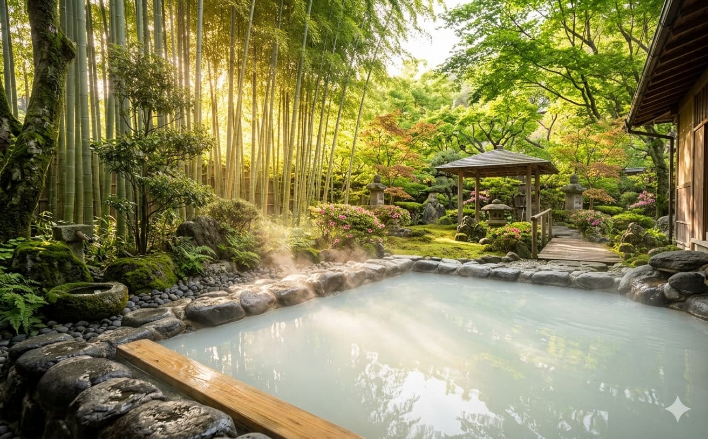
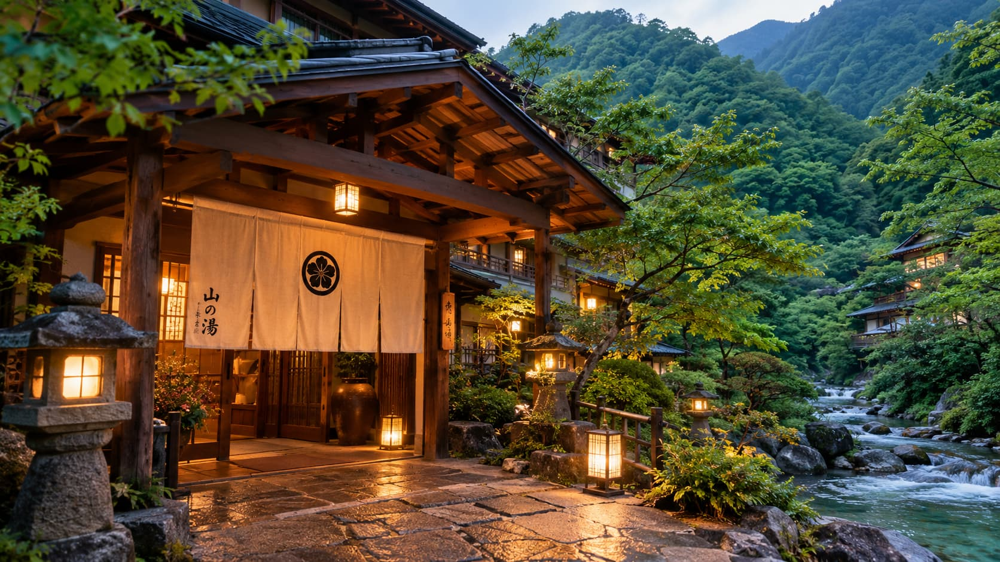
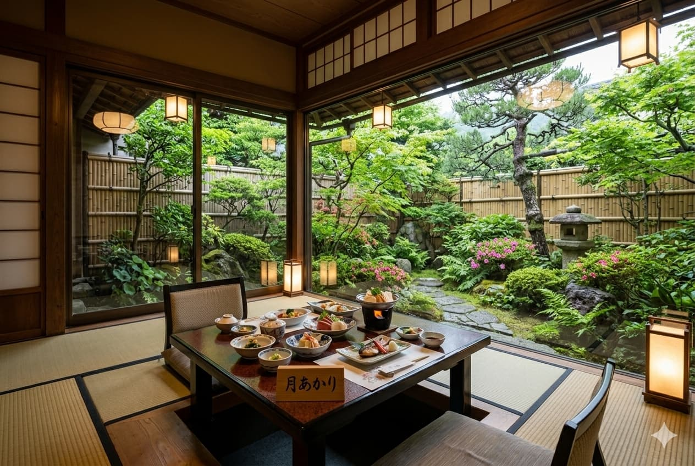
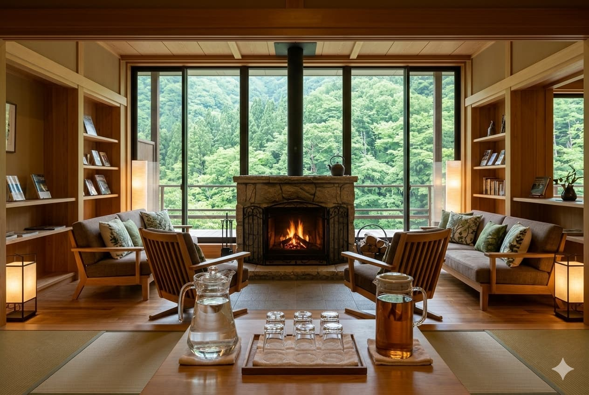

貸切檜露天風呂
ご家族やカップルで気兼ねなく湯浴みを楽しめるプライベート風呂。豊かな檜の薫りが漂います。（要予約制）
ONSEN & FACILITIES

館内の雰囲気を動画で見る翠泉閣の温泉は、毎分約200リットル湧出する極上の単純硫黄温泉。空気に触れることで乳白色へと色を変え、古くから湯治場として多くの旅人を癒やしてきました。

ご家族やカップルで気兼ねなく湯浴みを楽しめるプライベート風呂。豊かな檜の薫りが漂います。（要予約制）

坪庭を望む全席掘りごたつ式の個室空間。周囲を気にせずゆったりと会席料理をご堪能いただけます。

清らかな湧水と特製麦茶をご用意。暖炉の火を眺めながら、読書やお寛ぎのひとときをお過ごしください。